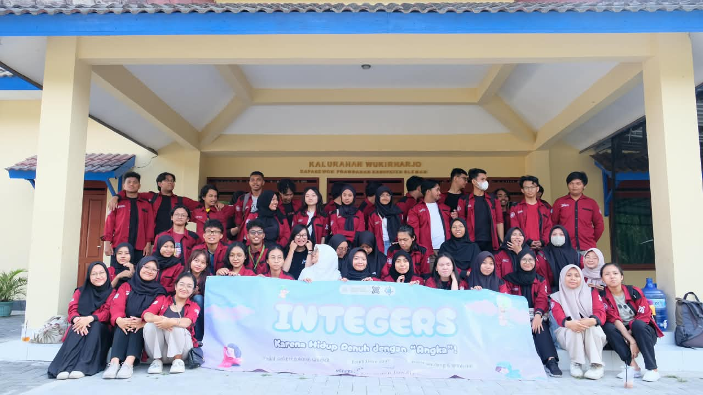

A collection of organizational and project experiences
that have shaped my leadership, collaboration, and problem-solving abilities.
Learning, Leading, and Making Things Happen
Throughout my university journey, I have taken on various roles that challenged me to lead teams, coordinate projects, and work with different people. From organizing national events to leading social initiatives, each experience has helped me grow, adapt to challenges, and develop a more structured approach to working and collaborating.


Coordinator of Logistics & Consumption Division
Lomba Matematika Nasional 36 & Semninar Nasional Matematika 17 · Feb 2025 – Nov 2025
- Led a 12-member team in planning and coordinating equipment, logistics, and catering needs for two national-scale events. Developed structured operational timelines to clarify task delegation, monitor progress, and streamline team coordination through execution day.
- Managed the procurement of catering, uniforms, and souvenirs for 250 offline participants through market research and vendor negotiation, achieving budget efficiency targets without compromising quality or operational adequacy.
- Developed a centralized Google Sheets-based inventory and coordination system integrating the operational requirements of 8 divisions. This platform streamlined real-time information updates, permit tracking, room layouts, and logistics distribution.
- Directed Front of House (FOH) technical operations and facilitated broadcast preparation training for 3 staff members to ensure seamless live-streaming execution via Zoom and YouTube.
Logistics Staff
Lomba Matematika Nasional 35 & Semninar Nasional Matematika 16 · Feb 2024 – Nov 2024
- Managed equipment procurement and fulfilled logistical requests from various divisions, ensuring all materials were accurately sourced, well-documented, and delivered strictly on schedule.
- Served as the dedicated Liaison Officer (LO) for the Events Division, streamlining communication and swiftly resolving logistical needs and urgent requests during the execution of the event.
- Contributed to the crafting and preparation of symbolic event props and decorations, ensuring visual elements aligned with the overall theme and aesthetic standards of the event.


Head of Social Department (Aksioma)
Himatika UGM · Jan 2024 – Des 2024
- Led and directed a 7-member department team in planning and executing social initiatives. Oversaw the initial recruitment process, including conducting interviews and selecting staff members.
- Designed the department's strategic framework and operational plans for 4 core social programs: Community Outreach, Orphanage Visits, Charity Drives, and Disaster Relief Funds.
- : Delegated responsibilities to staff members as Persons in Charge (PICs), empowering them to take ownership of program execution and develop their leadership capabilities while maintaining alignment with departmental objectives.
- Led weekly coordination meetings to monitor program progress, track project milestones, evaluate implementation, and provide strategic direction to ensure the effective execution of departmental initiatives.
Staff of Social Department (Aksioma)
Himatika UGM · Jan 2023 – Des 2023
- Assisted in planning and organizing community outreach programs, notably serving as Project Manager for a village empowerment event in Kulon Progo. Led 5 cross-functional divisions to execute youth tourism empowerment, children's education, and charity markets.
- Collaborated with team members and external partners to execute social initiatives. Acted as Logistics Coordinator for an orphanage visit and systematically managed task allocations, village surveys, and resource distribution using spreadsheets to ensure operational readiness.
- Managed, allocated, and assisted in raising funds for social activities and donations. Ensured effective budget implementation, transparent distribution, and optimal resource utilization across the department's programs.
Let’s Work Together
Interested in what I do? Explore my projects to see how I turn ideas into meaningful results, or feel free to reach out. I’d love to connect and explore opportunities to collaborate.